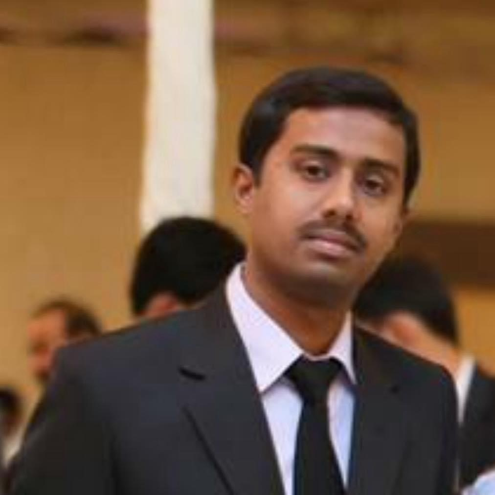

SAFWAN AHMED
HOUSE #330, BLOCK-6, LIAQUATABAD KARACHI PAKISTAN
Email: safwan_saf@ymail.com or safwan_saf@hotmail.com
Contact # 0092-3002203047 or 00923090121932
My Career
I want to say that I have completed my three years of Apprenticeship training in Aircraft Maintenance Engineering in Aerospace from Pakistan International Airline in 2006. My professional aviation career includes the working experience as an Aircraft Maintenance Technician in Line (Light) Maintenance of Pakistan International Airline from March 2007 to July 2016, I have also worked as Officer Engineering in Line Maintenance Planning Division from August 2016 to March 2019 and have little experience in Technical Services Engineering and Corporate Safety & Quality Assurance April 2019 to April 2021. Now I am currently working in Technical Publication & Record (Cardex section). I have completed my Boeing 737-300 Airframe, Basic Airframe, Basic Gas Turbine course and more courses from PIA Training Center (Approved from CAA-PAK). I have given the written and oral exam of LWTR (License Without Type Rating) License from Pakistan Civil Aviation Authority (CAA- PAK) and I have passed my written and Oral exam and I have got my basic (LWTR) license in Basic Airframe and Basic Gas Turbine Category and also Conversion of my LWTR into EASA B1 (SARI based) is completed. B2 Conversion is in Progress.
Educations
- Bachelors of Science in 2nd division from University of Karachi in 2007.(Major subjects Physics, Mathematics, Chemistry and English).
- Higher Secondary Education in ‘C’ grade from Bahria Foundation College in 2003.(Major subjects Physics, Mathematics, Chemistry and English).
- Secondary School Education in ‘A’ grade from National High School, Karachi in 2001.(Major subjects Physics, Mathematics, Chemistry, Biology and English)
Social Activity

CURRICULUM VITAE
Technical Qualification
- ELECTRIC WIRING INTERCONNECTION SYSTEM (EWIS) from PIA Training Centre. Approved from Civil Aviation Authority of Pakistan in 2022.
- Fuel Tank Safety Level II Training (CDCCL) from Pakistan International Airline Training Centre. Approved from Civil Aviation Authority of Pakistan in 2014.
- Soft Skills Training for Engineering Personnel Level I from PTC in 2018.
- Basic Gas Turbine Course from Pakistan International Airline Training Centre. Approved from Civil Aviation Authority of Pakistan in 2012.
- B737-300 Airframe Maintenance Course from PIA, PCAA approved in 2011.
- Basic Airframe Course from Pakistan International Airline Training Centre. Approved from Civil Aviation Authority of Pakistan in 2009.
- Standard Maintenance Practices Course from PIA Training Centre in 2008.
- Apprenticeship Training in Aircraft Maintenance Engineering in Aerospace from Pakistan International Airline Training Centre in 2006. 2003-2004 a)01 Year Classroom Training: Total Classroom Training: 1645 Hours / 52 Weeks 2004-2006 b)02 Years On-the-job training in Line & Base Maintenance, shops etc…. Total time: 4160 Hours / 104 Weeks
Work Experience
- Working in Technical Publication & Record of Pakistan International Airline as an Officer Engineering (April 2021 to date…..)
- Have worked in Corporate safety & Quality Assurance of Pakistan International Airline as an Officer Engineering (August 2020 to April 2021).
- Have worked in Technical Services Engineering Line Maintenance of Pakistan International Airline as an Officer Engineering (April 2019 to July 2020).
- Have worked in Line Maintenance Planning Division of Pakistan International Airline as an Officer Engineering “Planning Coordiantor” (Jul 2016 to Mar 2019).
- Have worked in Line Maintenance (Light Maintenance also have Heavy maintenance experience) Division of Pakistan International Airline as an Aircraft Maintenance Technician (July 2007 to July2016).
- Have worked in Cabin Maintenance Division of Pakistan International Airline as an Aircraft Maintenance Technician (March to July 2007)
License
- License # PCAA.66.02576 B1 SARI based, License from Pakistan Civil Aviation Authority (PCAA)